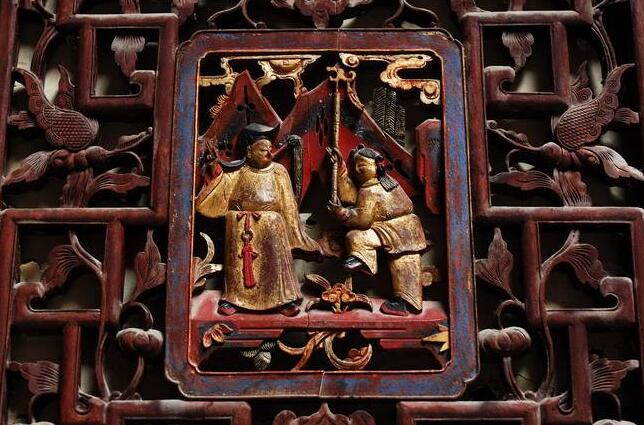
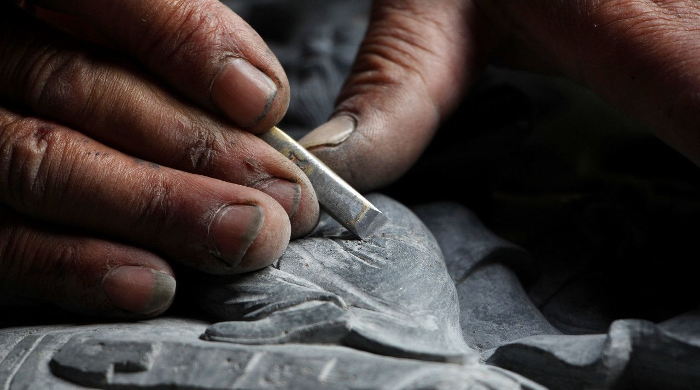
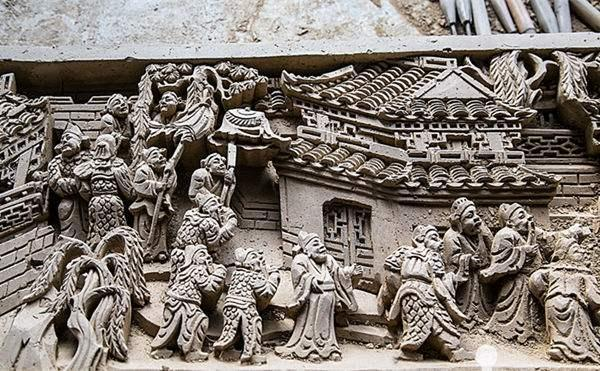

Horse-head wall referred to the wall which was between and higher than the two gable roof walls. Since its appearance was like a galloping horse, the wall was called horse-head wall. One of the main features of the Hui-style architectures was the broad range adoption of hose-like wall among the Hui-style architectures. Brick and wood were the main features of Hui-style architecture; while the main failure features of these architectures were the poor fire-proof performance. In ancient times, the firefighting was undeveloped. Once a building fired, it was straightforward that the nearby building burned. To prevent the spreading of fire, the ancient Huizhou residents created the Horse-like wall which could cut off fire effectively; just because of this, the horse-like wall was also known as fire seal wall.
The height of the horse-head wall varied from high to low, and typically, it had the two-lap wall or three-lap wall. The horse-head wall had various types, such as the ‘Magpie Tail Type,’ the ‘Print Bucket Type,’ the ‘Sit Kiss Type’ and others. The ‘Magpie Tail Type’ referred to using the magpie tail shaped bricks as the corner of the horse-head wall. The ‘Print Bucket Type’ referred to using the bucket type bricks as the corner of the horse-head wall. Those bucket type bricks were fired from kiln printed with “卐.” The ‘Sit Kiss Type’ referred to using zoomorphic ornaments as the corner of the horse-head wall. All of these beautiful horse-head walls well symbolized the wisdom of ancient Huizhou people, as well as the characteristic feature of Hui-style architecture.
Huizhou architecture is one of the traditional Chinese architecture styles, which prevailed mostly in the historical Huizhou prefecture of Anhui, China as a critical element of Huizhou culture. The architecture uses bricks, woods and stone as raw materials, timber frames as significant structures. The bearing structure is a wooden beam, and parapet walls are made of bricks, rocks, and soils. The central room is decorated with painted beams, sculpted roof, and carved eaves with skylights. The technical features and style of Hui-style architecture majorly occur in residential houses, ancestral temples, joss houses, archways, memorial gates, and gardens. The architecture reflects mountainous features of the area and a geomantic omen of traditional Chinese religions
Layout
Crossing-hall layout
This layout is also called loop-hall layout. The crossing-hall is located behind the major hall and intimately connected with the considerable hall. It is the transitional space between the major hall and the inner rooms. The pavement is usually wood material. The entrance is at both left and right side of the major hall. The crossing-hall has typically three rooms, one bright lounge with illuminating patio and two rooms for temporary using.
Central-hall layout
The central hall is illuminated by three openings (front, right, and left) which are separated by moving screens for winter warming and privacy. Most central halls face to the major patio and have two corridors connecting to other rooms. There are screen doors in the front of the central hall, and the middle part of the door is usually closed. In daily manners, users enter the hall from sides. If there is a formal activity, the users can use the middle door. There are guest rooms under the patio area. The central hall is mainly used for official celebrations, guest meetings and daily activities of the owners, the hall is considered as the major part of the architecture.
Three types of Huizhou carving
Wood carving
Huizhou mountainous area is rich in timber, the majority of buildings are brick, wood and stone structure, especially the use of wood, become the wood carving artists to play a clever place to use, Huizhou wood carving for old buildings and household utensils on the decoration, throughout the city and countryside, the distribution of its wide in the country can be counted. The screen, window pillar and column in the house, the bed, table, chair, case and literature room utensils in daily use can be seen on the wood carving, and there is almost no village. Huizhou wood carving has a wide range of subjects, including figures, landscapes, flowers, animals, insects and fishes, clouds, back to the pattern, eight treasures, words, tin link, and various auspicious patterns. Huizhou wood carving is based on the need and possibility of parts of architectural objects, using round carving, relief carving, perspective carving and other expression techniques.

Stone carving
Stone carving is widely distributed in Huizhou city and countryside, and there are many categories, mainly used for the decoration of corridor pillars, door walls, pagodas, tombs and other places of temples and houses, which are relief and round carving art and have a high reputation. Huizhou stone carving subject matter is limited by the carving material itself, not as complex as wood and brick carving, mainly animal and plant images, archaic patterns and calligraphy, as for the story of people and landscapes are less common. In terms of carving style, relief carving is mainly shallow perspective carving and plane carving, round carving integration trend is obvious, the knife method is exquisite in ancient and generous, not as delicate and tedious as the Qing Dynasty wood carving and brick carving.

Brick carving
Brick carving is an architectural decoration formed by exquisite carving on the finely textured green and gray bricks produced in Huizhou, and it is also an important art form in ancient Chinese architecture carving, which is widely used in the doorway, door sleeve, lintel, eaves, roof and roof tiling of Huizhou style to make the building look elegant and dignified. It is an important part of the Huizhou style architectural art that has emerged since the Ming and Qing dynasties.
Brick carving has flat carving, relief carving, three-dimensional carving, the subject matter includes plume flowers, dragon, tiger, lion and elephant, forest garden landscape, drama characters, etc., with a strong folk color. The style of brick carving in the Ming Dynasty tends to be overly coarse, clumsy and simple; in the late Ming and early Qing Dynasties, due to the rich merchants' pursuit of luxury life, so the style of brick carving in the Qing Dynasty tends to be delicate and complex, focusing on plot and composition, and deepening the layers of perspective carving. In the brick billet, which is more than a foot square and less than an inch thick, there is a complex plot and a multi-layered picture of the building, from the near to the far, with a front and back perspective and a clear hierarchy, with a maximum of about 9 levels, which gives rise to an exquisite and incomparable sense of beauty.
The materials and production of Huizhou brick carving are exquisite. Generally use the green bricks fired by special techniques, throwing the ground, the color is pure and clear as the material, first fine grinding into billet, outline the parts of the picture on it, chisel out the depth of the object, determine the picture of the distance and near the level, and then according to the outline of each part carefully carved, local "out of fine", so that the pre-designed pattern one by one to highlight. Brick carving can be seen everywhere in She County, Yixian County, Wuyuan, Xuning, Tunxi and other places. Ancient dwellings, feeder halls, temples and other buildings inlaid with brick carvings, although the wear and tear of the years, the wind and rain, they are still lingering and intriguing. She County Museum has a Zaoshen Temple brick carving, see the square only feet of the brick surface, carved with the head wearing a golden helmet, clad in armor, holding a steel mace round carved bodhisattva, according to the testimony of this piece of exquisite brick carving spent 1200 craftsmen, can be called the classic works of Huizhou brick art. In the 1980s, with the establishment of Huizhou Ancient Construction Materials Company, brick carving as a practical decorative art regained its vitality.
